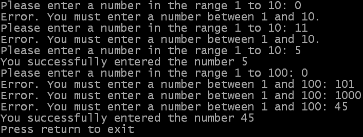

Interacting with the user: Reading values from the user
Now that you know how to display text for the user, we need to look at how to
read text in to your programs. There are two commands for doing this using
consoles, both described below.
The Input command
The first command is Input(), which you have already seen in the examples
and exercises. The Input command has no parameters but returns a string
(the string which the user typed into the console window). When using the
Input command it will read characters in from the keyboard (if the console
window is active), until the user presses the return key. The Input command
will only accept characters up to the width of the console window.
Because the Input command waits for return to be pressed you would normally
use it when the user must make some input into your program. One
example of this is the way we have used it so far in the User Guide, to pause
the program until the user presses return (giving us a chance to see the
text in the console window before the program ends). Other examples may
be when a user enters a filename, a username or a password. All of those
would normally be entered before the program continues.
Below is an example of using the Input command. You can find the source
here. Underneath the example you will find some
sample output and an explanation of the source.
If OpenConsole()
Print("Enter your name: ")
name$ = Input()
PrintN("")
PrintN("Hello, "+name$+", nice to meet you")
PrintN("Press return to exit")
Input()
CloseConsole()
EndIf
End
 You will notice that we use the line Print("Enter your name: ")
before we get to any Input command. This is done to provide a prompt
to the user; some instructions that tell them what to enter instead of simply
leaving a flashing cursor. You will also see that we used Print to provide this
prompt. This makes the users input appear on the same line as the prompt,
although that is simply a matter of how you want the prompt to be displayed.
You will notice that we use the line Print("Enter your name: ")
before we get to any Input command. This is done to provide a prompt
to the user; some instructions that tell them what to enter instead of simply
leaving a flashing cursor. You will also see that we used Print to provide this
prompt. This makes the users input appear on the same line as the prompt,
although that is simply a matter of how you want the prompt to be displayed.
However, the important parts of the above example are the following lines:
name$ = Input()
PrintN("")
PrintN("Hello, "+name$+", nice to meet you")
The first line there reads text entered by the user with the Input command.
The value returned by the Input command (which is the string the user has
entered) is stored in the name$ variable. The next line,
PrintN(""), may seem a strange thing to put in, but when the
user presses the return key it is not displayed in the console. So we must
"manually" put a new line in after the user has entered their string
(if we want to move onto a new line).
Finally, the string which the user entered is displayed to confirm that
it was read in successfully.
The Inkey command
The second method for reading the users input to a console window is the
Inkey() command. It has no parameters and returns
a string containing two characters, showing what key the user pressed.
Unlike the Input command, Inkey does not wait for the user to press return.
It will check the keyboard and immediately return a string showing what
key had been pressed at that point. If there is no key being pressed
then the returned string will be empty ("").
The first character in the returned string is the ASCII character which
represents that keypress. For example, if the user pressed the 'F' key then
the first character in the string will be "F". The second character
in the string is more useful when the user presses keys that do not correspond to
letters or numbers (for example, the arrow keys). The second character in the
string allows you to check for those special keys.
Typical cases where you may use the Inkey command would be those where
the user can press a key but if they do not the program should continue
some processing. One example of this may be if you are calculating some
value which will take a long time and you want to give the user the
option to cancel by pressing some key on the keyboard. Another example of this
might be if you had a menu displayed that you wanted your program to respond
to any keys pressed immediately rather than wait for the return key to be pressed.
There is no example for the Inkey command at the moment because we have not yet
covered enough of the PureBasic language to allow us to process the characters
in the string. The required commands will be covered in the next chapter.
Reading in numbers
The two commands described above only cater for reading strings from the
user, so what do you do if you want to read in a number? For this you need
to know a couple of other commands, namely Val()
and ValF(). These two commands perform the opposite
function of the Str and StrF commands that were introduced in the
Variables chapter.
The Val command takes a string (which contains a number) as a parameter
and returns a long as the result (which is the value of the number in the
string). The number contained in the string should only be a whole number.
The ValF command is similar, but is used to convert numbers with fractional
parts. It also takes a string as the parameter (containing the number to convert)
but this time returns a float.
This example shows the workings of Val and ValF. You can find the source
here and the output of the example below.
If OpenConsole()
Print("Please enter your name: ")
name$ = Input()
PrintN("")
Print("How old are you? ")
age.w = Val(Input())
PrintN("")
Print("Please enter a number (with decimal places if you like): ")
num1.f = ValF(Input())
PrintN("")
Print("and another (with decimal places if you like): ")
num2.f = ValF(Input())
PrintN("")
; Display the results to the user
PrintN("")
PrintN("Hello, "+name$+". I see that you are "+Str(age)+" years old.")
PrintN("You have an affinity with the number "+StrF(num1 * num2)+"!")
PrintN("Press return to exit")
Input()
CloseConsole()
EndIf
End
 As you can see most of this example is the same as the Input example. The main
differences are in the lines which use either the Val or ValF commands. In these
cases the value returned by the Input command (which is the string that the user
enters) is used directly as the parameter to the Val or ValF command, to get the
numerical value of the number in the string. Of course, to print these out again
we need to convert them back to a string using the Str or StrF commands.
As you can see most of this example is the same as the Input example. The main
differences are in the lines which use either the Val or ValF commands. In these
cases the value returned by the Input command (which is the string that the user
enters) is used directly as the parameter to the Val or ValF command, to get the
numerical value of the number in the string. Of course, to print these out again
we need to convert them back to a string using the Str or StrF commands.
Validating user input
Another important task which you will need to deal with quite often is validating
some input that the user has given your program. You do this to make sure the
data your program has to work with is valid, and in an acceptable form or in the
correct range. This does not just apply to reading input from a console, but it is
a useful place (i.e. in the beginning) to start thinking about it.
To perform the validation of data, you only really need two parts to a piece of
code. The first must read the data from the user, and must be enclosed within the
second part - a loop which repeats until the correct format of data has been entered
(or while the incorrect format of data is being entered). The example below shows
two possible ways you can validate data that the user enters using the Input() command.
You can also find the source here.
If OpenConsole()
; Problem 1 - read a number from the user in the range 1 to 10
Repeat
Print("Please enter a number in the range 1 to 10: ")
number.l = Val(Input())
PrintN("") ; Move onto the line after the user's number has been entered
; Check the data the user entered and let them know if it was incorrect
If number<1 Or number>10
PrintN("Error. You must enter a number between 1 and 10.")
EndIf
; Keep going round the loop until the number the user enters is valid
Until number>=1 And number<=10
PrintN("You successfully entered the number "+Str(number))
; Problem 2 - read a number from the user in the range 1 to 100
Print("Please enter a number in the range 1 to 100: ")
number = Val(Input())
While number<1 Or number>100
PrintN("")
Print("Error. You must enter a number between 1 and 100: ")
number.l = Val(Input())
Wend
PrintN("")
PrintN("You successfully entered the number "+Str(number))
PrintN("Press return to exit")
Input()
CloseConsole()
EndIf
End

In the above example, two possible loops are shown as an example of how to
read a value from the user and make sure it is within a given range. In the first case,
the loop is taken care of by the lines:
Repeat
and
Until number>=1 And number<=10
meaning that the instructions inside the loop will repeat until the value of
the number variable is more than or equal to 1 and less than or equal to 10
(in other words in the range 1 to 10, inclusive). The second requirement is fulfilled
when the user is given some instruction about what to enter (always useful). The
Input() command is used to read what the user types and the Val() command is used to
convert it to a number.
Print("Please enter a number in the range 1 to 10: ")
number.l = Val(Input())
PrintN("") ; Move onto the line after the user's number has been entered
The user is then given some immediate feedback so that they know they have made a mistake.
Notice that the expression in the If condition is the opposite of the condition that
controls the loop (since this condition is used to see if the user input is out of range
and the loop control condition checks to see if it is in range).
If number<1 Or number>10
PrintN("Error. You must enter a number between 1 and 10.")
EndIf
The second example shows an alternative method for validating user input. First of all
the user is prompted to enter a value in a certain range. This value is then read using the
Val and Input commands:
Print("Please enter a number in the range 1 to 100: ")
number = Val(Input())
The loop then runs while the data is outwith the required range (remember, a While...Wend
loop will not be executed at all if the condition is not met). In this case, the instructions
inside the loop are executed while the number that the user has entered is lower than 1 or more
than 100 (the range limits):
While number<1 Or number>100
and
Wend
Finally, the instructions in the loop are used to tell the user that they have made a mistake and
then read in a new value (again, using the Val and Input commands).
PrintN("")
Print("Error. You must enter a number between 1 and 100: ")
number.l = Val(Input())